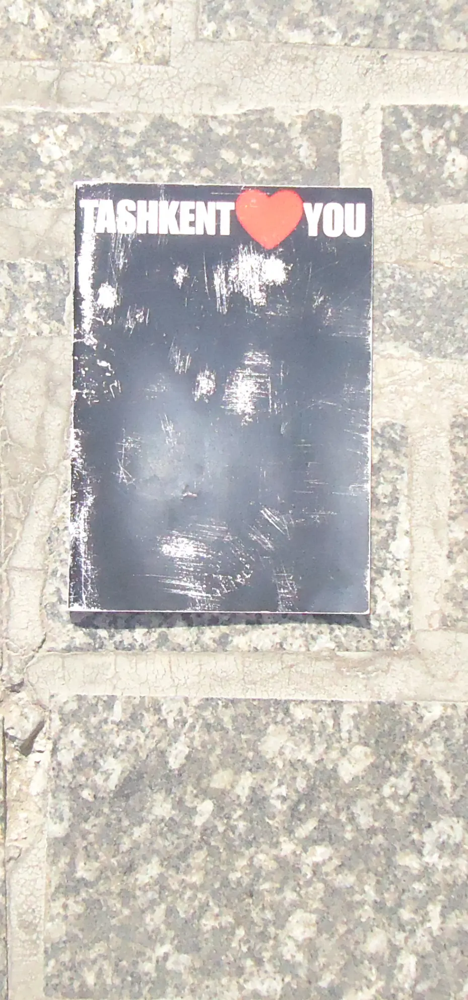
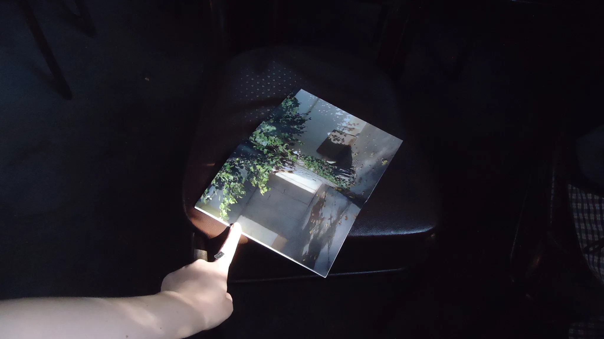
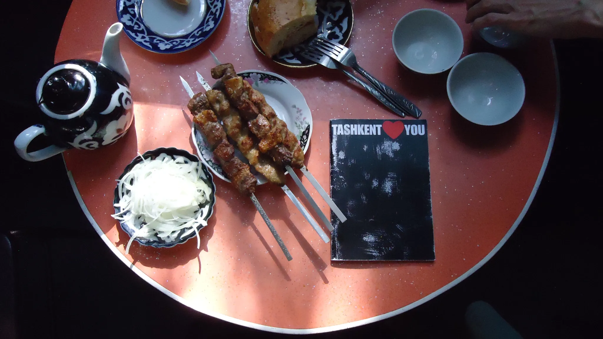

 Menu
Menu
TASHKENT<3YOU
Zine
2021
A zine about Tashkent—its dusty roads, the fences marking renovation sites and construction zones where mahallas once stood, the shady corners beneath sprawling plane trees, and the magic and metaphysics found only here, hidden in secluded courtyards and tree hollows.
This tiny book is the result of a daily ritual of observing my hometown. Through eyes full of love and longing, I’ve used photography to capture Tashkent as I knew it, witnessing the rapid transformation that is gradually changing it beyond recognition.
I took these photos throughout 2021 and posted them on my Stories. At some point, I wanted to pull these photos out of digital space, to materialize them, so that this book itself would serve as a testament to what no longer exists in reality.
Видео

